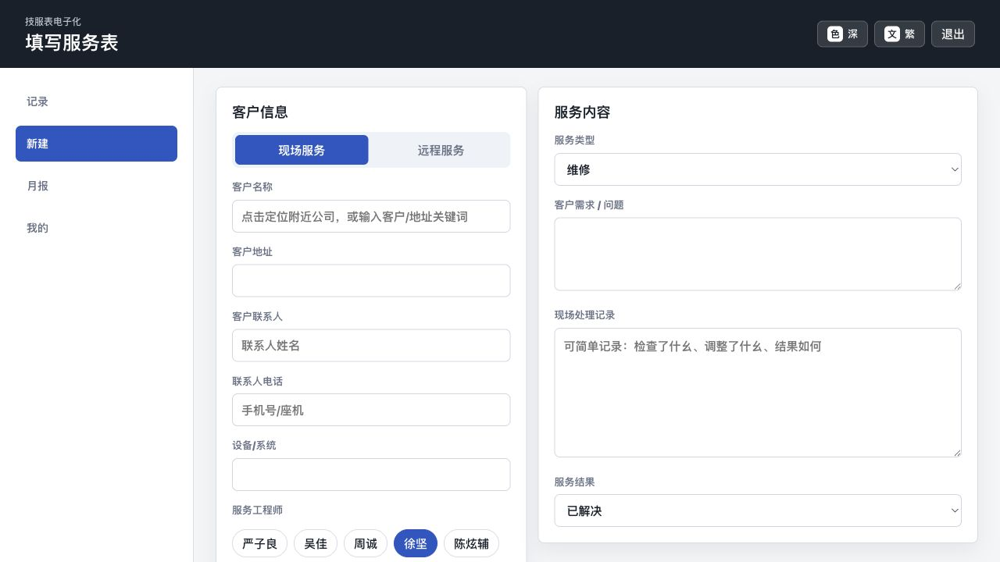
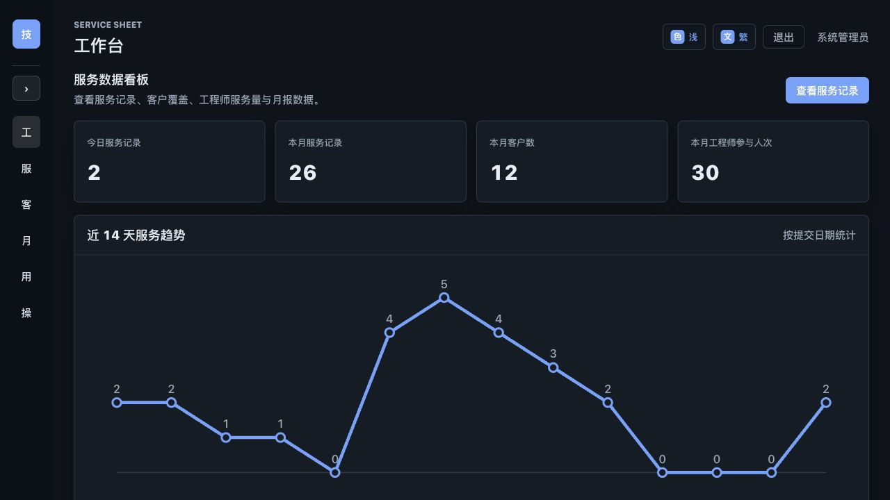
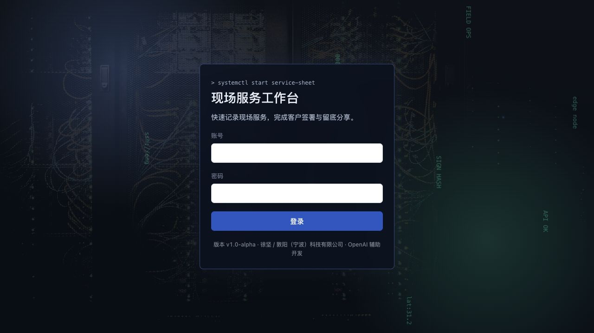
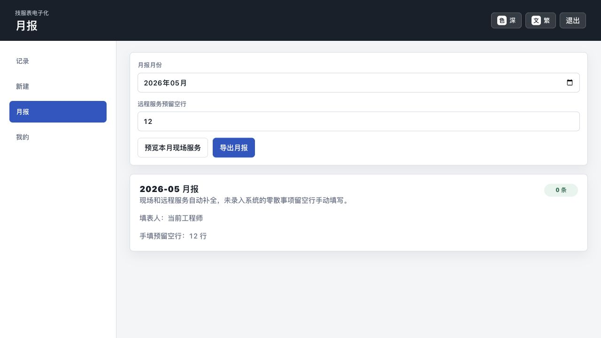

工程师端服务记录
支持现场服务和远程服务两类记录，按场景展示不同字段，并提供客户信息、联系人、设备和处理记录填写。
Service Sheet Electronic
项目覆盖工程师填写、客户签名、管理端查询、固定版式导出、客户分享和个人月报统计，减少纸质服务表流转和重复整理。

Core Workflow
支持现场服务和远程服务两类记录，按场景展示不同字段，并提供客户信息、联系人、设备和处理记录填写。
现场服务可采集客户手写签名，生成固定版式技术服务咨询表，并用于客户留底分享。
服务记录自动进入个人月报，工作性质和类别使用中文描述，也支持补充学习研究、内部会议、文档整理、培训等月报条目。
管理端可查看服务单、客户、设备和月报信息，并使用与工程师端一致的服务表导出格式。
Technology
Vue 3、Vue Router、Pinia、Vite，以及基于 CSS 变量的多主题界面。
Node.js、Express、MySQL 8、mysql2 和 JWT 鉴权，承载服务记录、客户资料和月报 API。
ExcelJS、xlsx、html-to-image，以及固定版式 SVG/PNG 技术服务咨询表。
Docker、Docker Compose、Caddy、GitHub 私有仓库和 GitHub Pages 公开展示页。
Screenshots



Release Notes
月报工作性质和类别改为中文描述；多工程师现场服务可按工程师区分处理记录，同时完善签名复用、月报条目和客户多联系人维护。
新增固定版式预览分享流程，优化现场与远程服务字段展示，强化必填校验，并改善后台数据查询性能。
服务表和月报导出加入品牌标识、表格样式、链接跳转和多主题界面基础。
新增更新日志，并同步管理端、工程师端和后端版本展示。